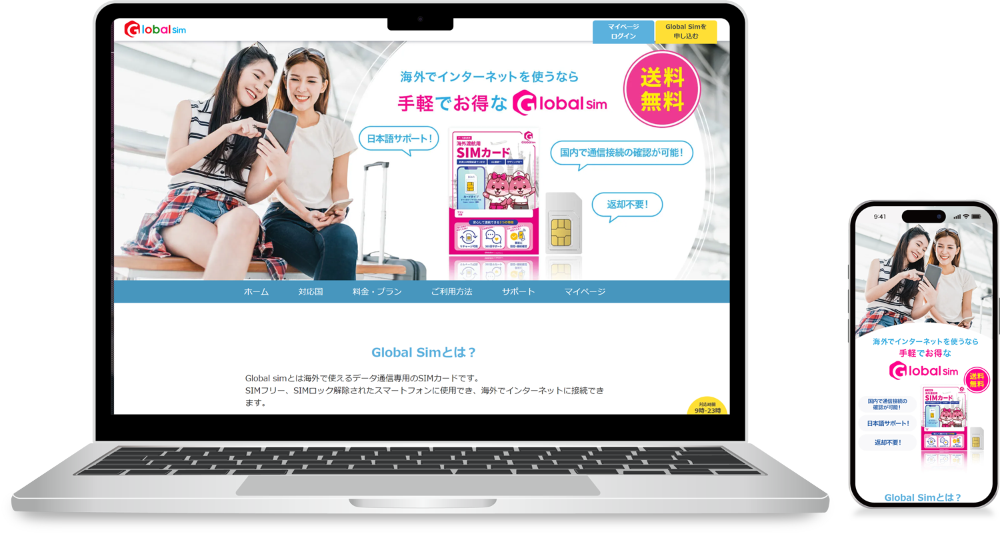

海外渡航用SIMの自社販売のため、41ページに及ぶ大規模なECサイトを企画からUIデザイン、コーディングまで一貫して担当しました。最適なプランを算出するシミュレーション機能やマイページ、商品管理用CMSのUI設計とフロント実装を網羅。大規模サイトを単独で形にできる高い構築力が強みです。

サイトリンク: https://buy.gojapan.ne.jp/
海外渡航用SIMの自社販売チャネルを確立するため、大規模な新規ECサイトの立ち上げが必要となりました。競合他社に負けない利便性を確保しつつ、多様なプランをユーザーが迷わず比較・検討できること、また公開後に社内で効率的に商品情報やデータを管理・更新できる拡張性の高いシステム基盤の構築が求められました。
サイトマップや要件定義の策定から参画し、41ページに及ぶレスポンシブサイトの企画・UIデザイン・コーディングを一気通貫で担当。ユーザーが最適なプランを直感的に算出できる「シミュレーション機能」のUI設計や、購入手続きをスムーズに行える「マイページ」のフロントエンド実装を行い、CMSによる効率的な商品・代理店管理画面まで一連の仕様を破綻なく形にしました。
綿密なテスト設計と実施を徹底し、複雑な動的機能も含めてバグのない正確な実装でスケジュール通りのサービスインを完了。大規模なWebサイトであっても、デザインから複雑なフロントエンド実装、運用を考慮したCMS構築までを、単独で一貫して高いクオリティで完結できる機動力と開発管理能力を証明しました。